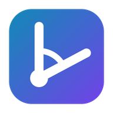

Joint Lab Console
Istruzioni per tablet Android · versione 1.1.0
Indirizzo dell'app (aprilo con Google Chrome sul tablet):
Privacy. Le misure arrivano dalle schede via Bluetooth direttamente sul tablet e restano lì:
non vengono mai inviate su internet. Internet serve solo la prima volta, per installare l'app, e per ricevere gli aggiornamenti.
1 · Installazione (una volta sola)
- Apri Google Chrome sul tablet e vai all'indirizzo qui sopra (oppure tocca Apri l'app).
- Tocca il menu ⋮ in alto a destra → Installa app (su alcuni tablet si chiama Aggiungi a schermata Home → Installa).
- Conferma. Sulla schermata Home compare l'icona Joint Lab Console.
Da quel momento apri sempre l'app dall'icona: si apre a schermo intero e funziona anche senza internet.
2 · Prima connessione: permessi
- Accendi il Bluetooth del tablet.
- La prima volta che premi Connect, Android chiede di consentire a Chrome l'accesso ai Dispositivi nelle vicinanze (su tablet meno recenti: alla Posizione): tocca Consenti.
- Sui tablet con Android 11 o precedente la Posizione deve essere attiva (menu rapido in alto), altrimenti le schede non compaiono.
3 · Uso quotidiano
- Tocca l'icona Joint Lab Console.
- Accendi la scheda e premi Connect: scegli il dispositivo che inizia con IMU e tocca Accoppia.
- Nel riquadro Settings scegli articolazione, lato e posizione di calibrazione, poi Monitor this joint →.
- Paziente nella posizione di calibrazione → ⟲ Calibrate e segui il messaggio (fase 1: fermo; fase 2: muovere tutto l'arto con l'articolazione bloccata).
- ▶ Start per registrare, ■ Stop per terminare.
- Download .json salva la sessione nella cartella Download del tablet (app File).
Due schede: linguette PCB A e PCB B in alto, ognuna con la sua pagina.
4 · Sessioni salvate nella scheda (cavo USB)
La linguetta USB copia le sessioni dalla memoria della scheda. Su tablet funziona solo se Chrome e il tablet lo permettono: collega la scheda con un cavo USB-C (o un adattatore OTG) e premi Connect USB.
Se la pagina USB mostra «USB download needs Google Chrome on a computer», su questo tablet lo scarico via cavo non è disponibile:
scarica le sessioni da un PC o Mac con il pacchetto per computer.
5 · Se qualcosa non va
| Nel menu ⋮ non c'è «Installa app» | Controlla di usare Google Chrome (non il browser del produttore) e aggiornalo dal Play Store. |
| Premendo Connect la scheda non compare | Bluetooth acceso, permessi concessi (punto 2), Posizione attiva sui tablet meno recenti, scheda accesa e vicina. |
| «No Web Bluetooth in this browser» | Stai usando un browser diverso da Chrome: apri l'app dall'icona installata con Chrome. |
| L'app non si aggiorna | Collega il tablet a internet, apri l'app, chiudila e riaprila. |